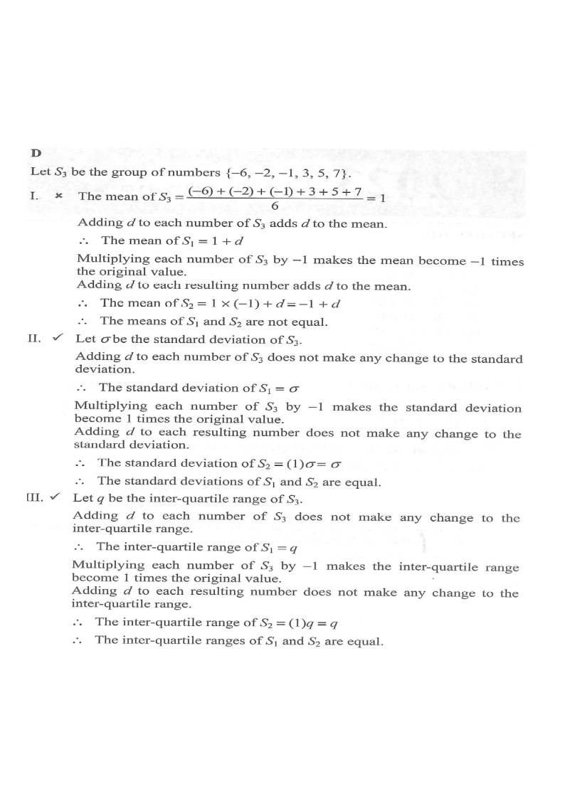

Effect of adding a constant $d$ and multiplying by $-1$ on mean, standard deviation and inter-quartile range.
Step 1 — The two data sets $S_1$ and $S_2$ written as transformations of the base set $S_3$.
$S_1$ values$S_2$ valuesbase set $S_3$mean
HKDSE 2022 P2 Q45
It is given that $d$ is a real number. Let $S_1$ be a group of numbers
$\{d-6,\; d-2,\; d-1,\; d+3,\; d+5,\; d+7\}$ and $S_2$ be another group of numbers
$\{d-7,\; d-5,\; d-3,\; d+1,\; d+2,\; d+6\}$.
Which of the following is/are true?
I. The means of $S_1$ and $S_2$ are equal.
II. The standard deviations of $S_1$ and $S_2$ are equal.
III. The inter-quartile ranges of $S_1$ and $S_2$ are equal.
A. I only
B. II only
C. I and III only
D. II and III only

Figure (original exam diagram)
1Write both sets from one base set
Take the base set $S_3=\{-6,-2,-1,3,5,7\}$.
base $S_3$
-6
-2
-1
3
5
7
$S_1=S_3+d$
$d-6$
$d-2$
$d-1$
$d+3$
$d+5$
$d+7$
$S_2=-S_3+d$
$d-7$
$d-5$
$d-3$
$d+1$
$d+2$
$d+6$
Hint: $-(-6)=6$, $-(-2)=2$, $-(-1)=1$, $-(3)=-3$, $-(5)=-5$, $-(7)=-7$, then add $d$ — that gives exactly $S_2$.
Mean of a Data Set\(\text{mean}=\dfrac{\text{sum of all values}}{\text{number of values}}\)Each of the two sets listed holds five values, so each mean is its total divided by \(5\).
2Check I — the means
Mean of $S_3=\dfrac{-6-2-1+3+5+7}{6}=\dfrac{6}{6}=1$.
Adding a constant shifts every value, so it shifts the mean by the same amount:
$\bar{S_1}=1+d$.
For $S_2$: multiplying each value by $-1$ multiplies the mean by $-1$, and adding $d$ adds $d$:
$\bar{S_2}=1\times(-1)+d=-1+d$.
Since $1+d\neq -1+d$, the means are NOT equal. I is false.
Hint: only if the mean of $S_3$ were $0$ would the two means coincide.
3Check II — the standard deviations
Let the standard deviation of $S_3$ be $\sigma$.
Adding $d$: no change ⇒ s.d. of $S_3+d$ is $\sigma$.
Multiplying by $-1$: no change to spread ⇒ s.d. of $-S_3$ is still $\sigma$; then adding $d$ again changes nothing.
So s.d.$(S_1)=\sigma$ and s.d.$(S_2)=(1)\sigma=\sigma$.
The standard deviations are equal. II is true.
Hint: mean changes under translation, but spread (s.d., IQR, range) is unchanged by adding a constant; multiplying all values by $-1$ only reflects the data, so spread is unchanged too.
Standard Deviation\(\sigma=\sqrt{\dfrac{\sum (x-\bar{x})^{2}}{n}}\)The spread of each set is measured by how far its five values lie from its own mean.
4Check III — the inter-quartile ranges
Let the inter-quartile range of $S_3$ be $q$.
Adding $d$: no change ⇒ IQR of $S_1$ is $q$.
Multiplying by $-1$: the reflection turns the lower quartile into the negative of the upper quartile, so IQR becomes $(1)q=q$; adding $d$ then changes nothing.
So IQR$(S_1)=q$ and IQR$(S_2)=(1)q=q$.
The inter-quartile ranges are equal. III is true.
Hint: IQR $=Q_3-Q_1$; under the map $x\mapsto -x+d$ the two quartiles swap roles but the gap between them stays the same.
Inter-quartile Range\(\text{IQR}=Q_{3}-Q_{1}\)The middle half of each set is compared, so only the two quartiles are needed.
5Which is/are true? Choose the option
I: false · II: true · III: true
Only II and III are true ⇒ option D.
Hint: remember "add constant $d$ ⇒ mean$+d$, s.d./IQR unchanged" and "multiply by $-1$ ⇒ mean$\times(-1)$, s.d./IQR unchanged".
Answer: D (II and III only)
PRACTICESimilar question — try it yourself
Question. For the five numbers \(12, 15, 15, 18, 20\) form data set \(X\). Data set \(Y\) is obtained by adding \(6\) to every value of \(X\). Which of the following is true? A. The mean and the standard deviation of \(Y\) are each \(6\) more than those of \(X\). B. The mean of \(Y\) is \(6\) more than the mean of \(X\), and the standard deviations are equal. C. The mean is unchanged but the standard deviation of \(Y\) is \(6\) more. D. The inter-quartile range of \(Y\) is \(6\) more than that of \(X\). [1 mark]
Show the worked solution
Step 1. Mean of \(X=\dfrac{12+15+15+18+20}{5}=\dfrac{80}{5}=16\), so the mean of \(Y\) is \(16+6=22\).
Step 2. Each deviation becomes \((x+6)-(\bar{x}+6)=x-\bar{x}\), so every deviation is unchanged.
Step 3. Hence \(\sigma_{Y}=\sigma_{X}\): the two standard deviations are equal, not \(6\) apart.
Step 4. Both quartiles also rise by \(6\), so the inter-quartile range stays the same; only B holds.
Answer: B. mean increases by \(6\), standard deviations equal